CS194-26 Proj 3: Image blending
Brian Aronowitz: 3032201719, cs194-26-aeh
Part 1-1: Unsharp mask
In part 1 we implement a basic unsharp mask.
The equation is original + weight * (image - gaussian_blurred(original)).
Taking an image and subtracting a low pass filter leaves an image that consists of the high frequencies of the image. These high frequencies correspond to edges. By readding them back into the image, this creates an edge sharpening filter.
|
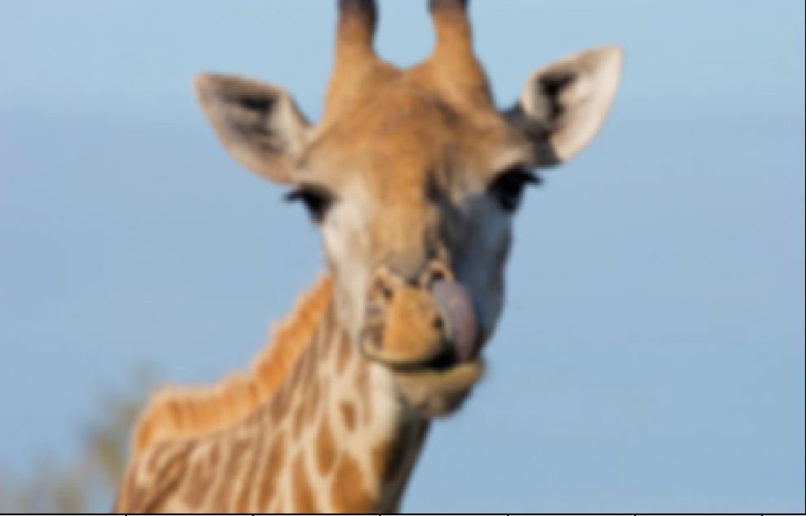
Blurred Giraffe
|
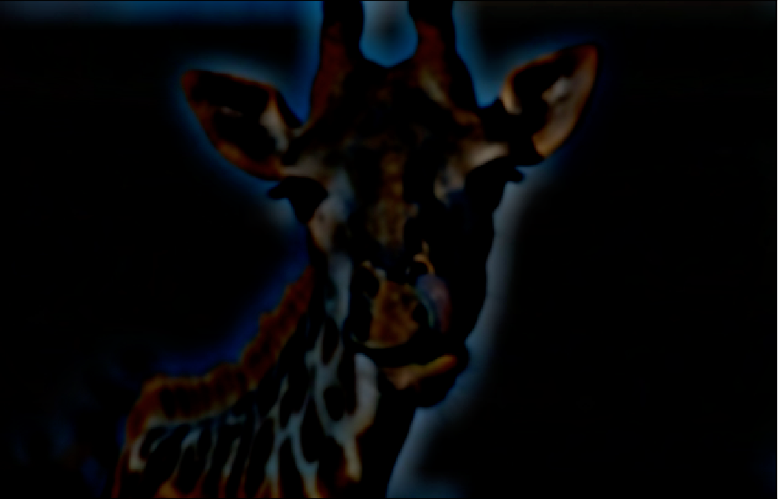
Image - gaussian_blurred (sig .5)
|
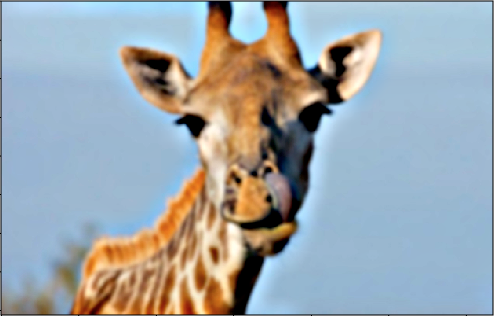
Result
|
Part 1-2: Hybrid images
In part 1-2, we create hybrid images described in the SIGGRAPH 2006 paper by Oliva, Torralba, and Schyns. The idea is to exploit the fact that humans cannot perceive high frequencies at certain scales and distances. If you extract the high frequencies from one image, and overlay them on the low frequencies of another, to create a hybrid image. This hybrid image will look like the high frequency image at close distances, where high frequencies dominate human perception. At far distances, and small scales, the high frequencies will fade away, and only the low-frequency image can be seen.
The way the two images are created is by extracting the high frequencies of one, and removing the high frequencies of the other. The low frequency image is created by performing a gaussian blur on it, the important variable here is the `sigma1`, which denotes the spread of the gaussian in the 2D kernel.
The high frequency image is created by subtracting the blurred image from the original image. The blurr of the image is denoted by `sigma2` in the following figures, which once again corresponds to the spread of the gaussian.
Sigma variations
By varying the sigma's, you can achieve different blends of the images. By decreasing the sigma of the high frequency image, you can also decrease the spread of the gaussian, and therefore it becomes a sharper edge filter. Below I vary the sigmas to show how the blending of the images can change.
|
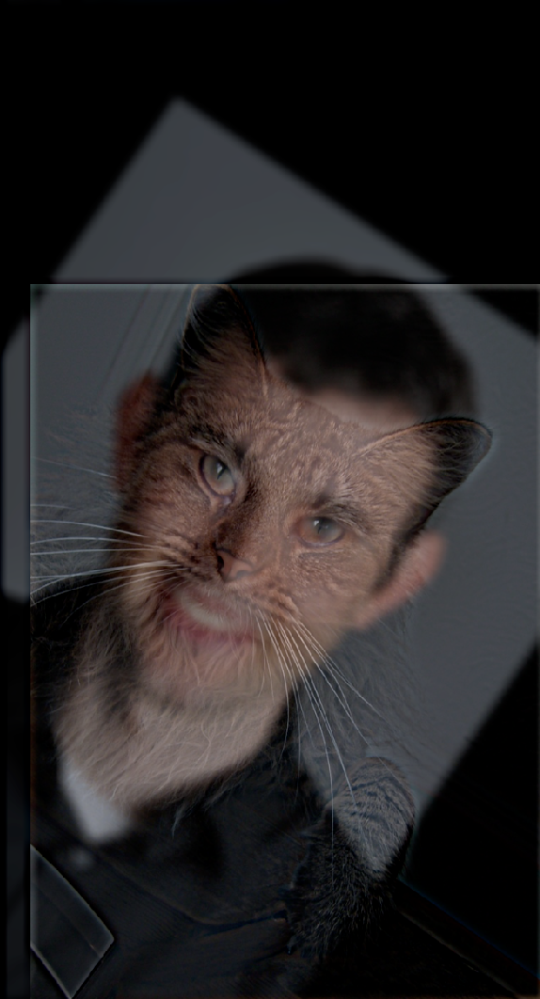
Sigma1 = 1, Sigma2 = 1
|
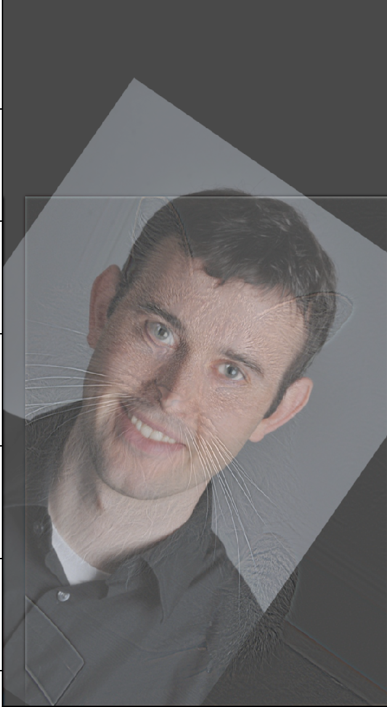
Sigma1 = 40, Sigma2 = 5
|
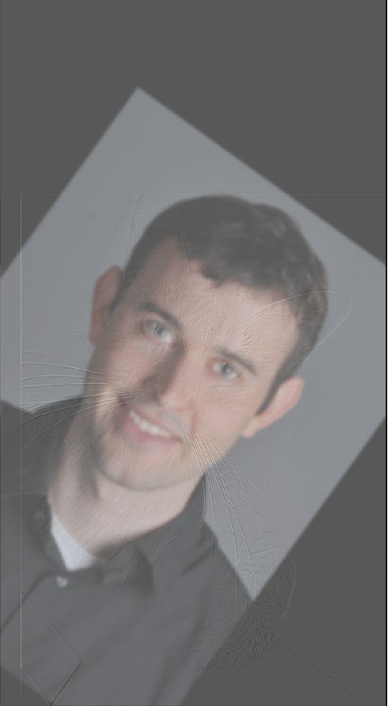
Sigma1 = 5, Sigma2 = 40
|
Successful blend 1
 High frequency image
High frequency image
|
 Low frequency image.
Low frequency image.
|
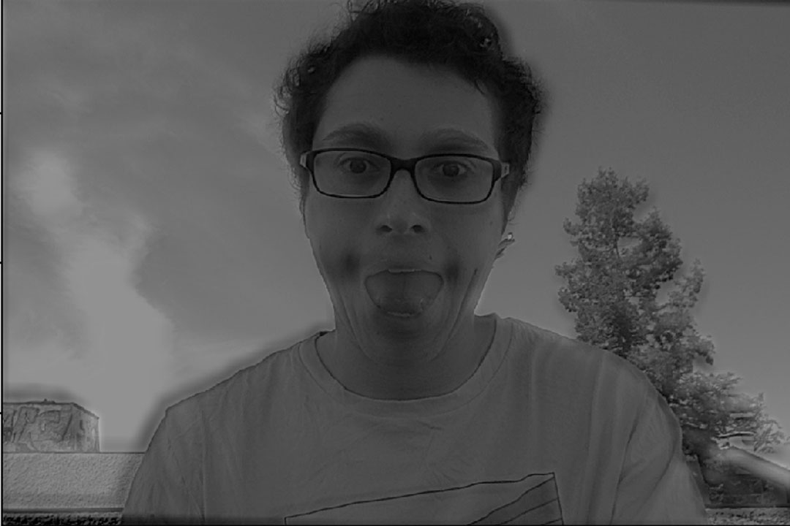
Final blend.
|
Successful blend 2, with Fourier analysis
 Fourier analysis of NY during day
Fourier analysis of NY during day
|
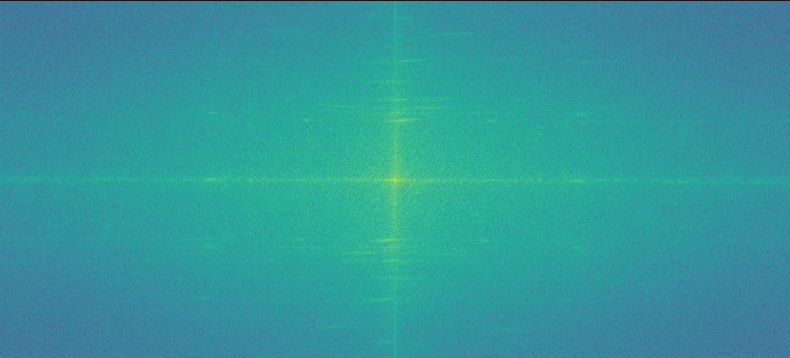
Fourier analysis of NY during night
|
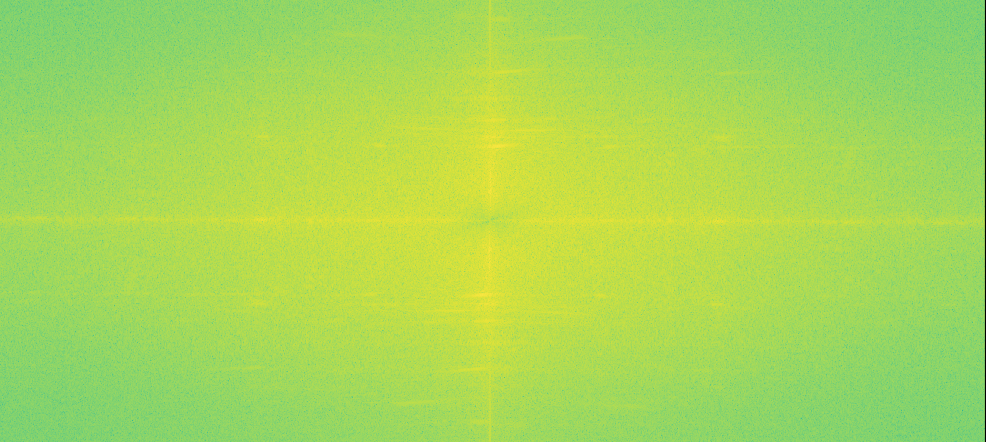
Fourier analysis of blurred gaussian.
|
 Fourier analysis of high freq photo.
Fourier analysis of high freq photo.
|
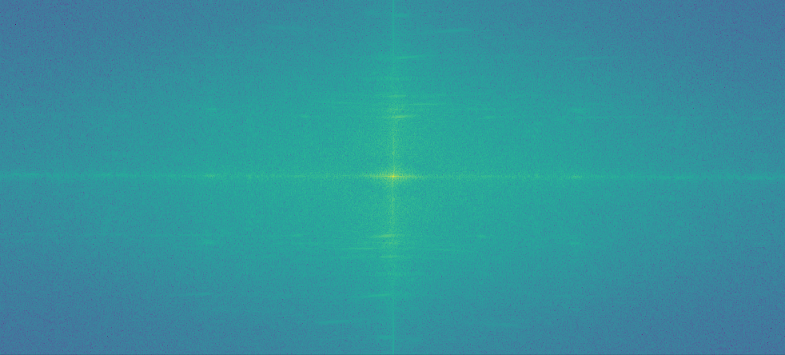
Fourier analysis of final blend.
|
Failure blend.
After spending probably two hours trying to get Tommy Wiseau's face onto a potato I called it a failure. It turns out if you make the high frequency filter too agressive, it also picks up quite a bit of low frequencies, dominating the photo at all scales and distances.
Part 1-3: Gaussian and Laplacian stacks
For part 1-3, we implemented gaussian and laplacian stacks. These stacks are created by recursively applying the processes outlined in part 1-1 and 1-2. The gaussian stacks result in images that are the original, with more and more high frequencies filtered out. Said in plain english, the gaussian stack is a stack of more and more blurry images.
The laplacian stacks are similar. The top of the stack represents the highest frequencies, while the lower ones represent lower frequencies.
|
From part 1-2, the gaussian stack of new york.
|
|
From part 1-2, the laplacian stack of new york.
|
|
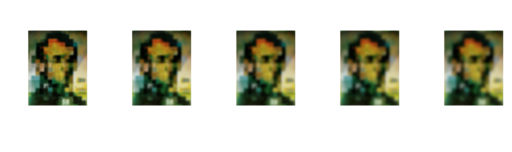
The gaussian stack of Dali's painting.
|
|
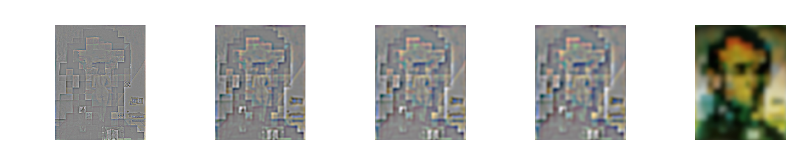
The laplacian stack of Dali's painting.
|
Part 1-4: Multiresolution blending
In part 1-4 I implemented the multiresolution blending algorithm as described in the 1983 paper by Burt and Adelson. Essentially the idea is to blend images across their laplacian and gaussian stacks, using a 'weight' that corresponds to a blurred mask at each step in the stack.
The algorithm takes 3 inputs: The first image, the second image, and the mask.
|
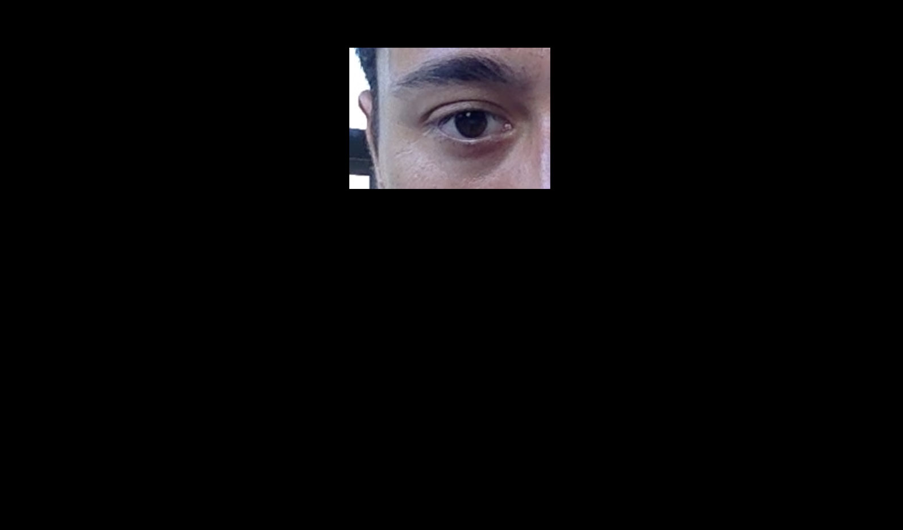
|

|

|
Below I show the laplacian stack levels of the images. There also are corresponding gaussian stacks for both the first and second images, as well as gaussian stacks for the mask, and it's inverse. It's a total of six data structures for everything.
|
Laplacian stack for eye.
|
|
Laplacian stack for me.
|
The algorithm works by multiplying the corresponding gaussian stacks and laplacian stacks together from each image, and averaging them at each level. You end up with a nice blend around the edges of the image. Here is the final result.
Below is a another set of inputs to the algorithm.
Final result: Titled, 'maybe were not alone after all...'
Here are some attempts at replicating the or-apple, messing around with different masks and sigmas.

|
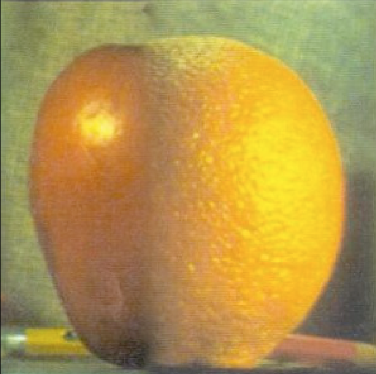
|
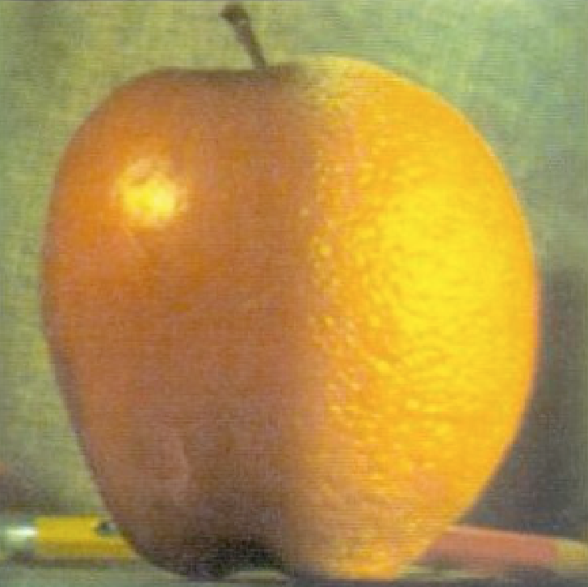
|
Part 2-1: The Toy Problem
For part 2 we implemented poisson blending. This algorithm works by matching the gradients in the target image to the gradients in the intended source.
In part 2-1 we implemented a simple case, where we want to reconstruct an image completely. For this, we only need right to left direction gradients, and up to down direction gradients. We solve using least squares.
Results
My reconstructed toy image, was darker than the original. This may have been because of several things. I reduced the atol and btol of my scipy.sparse.lsqr solver, which possibly may have effected reconstruction. Secondly, it's possible when displaying the image that my imshow messed up the colors. In theory, you have enough information to perfectly reconstruct the pixels, so I'm assuming it was one of those two things.
Part 2-2: Poisson blending
For part 2-2 we implement real poisson blending. To accomplish this, you need three inputs, a target, a source, and a mask.
The idea is to match the pixels in the mask regions to the gradients of the source. I set up my A matrix by filling it with -1s and 1s, to match to my B vector, which is populated with my intended source gradient values. The boundary conditions on the mask (where pixel gradients 'fall off' the edge) involves weighting the intended final values with the target image pixel values. We once again solve for 'x' with least squares. This creates smooth transitions along the edges, with the error distributed among the center pixels.
To optimize my algorithm, I needed to crop out the bounding box of the region I wanted to blend. I then solve for this region using scipy.sparse.ltsq. Afterwards, I blend this region back into the image.
Result of previous inputs
|
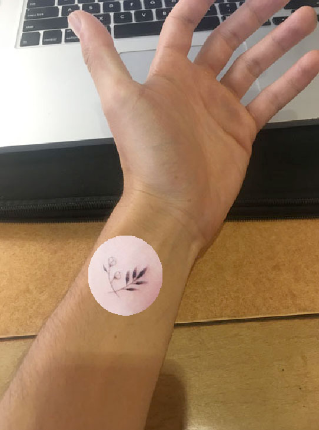
Direct pixel copying
|
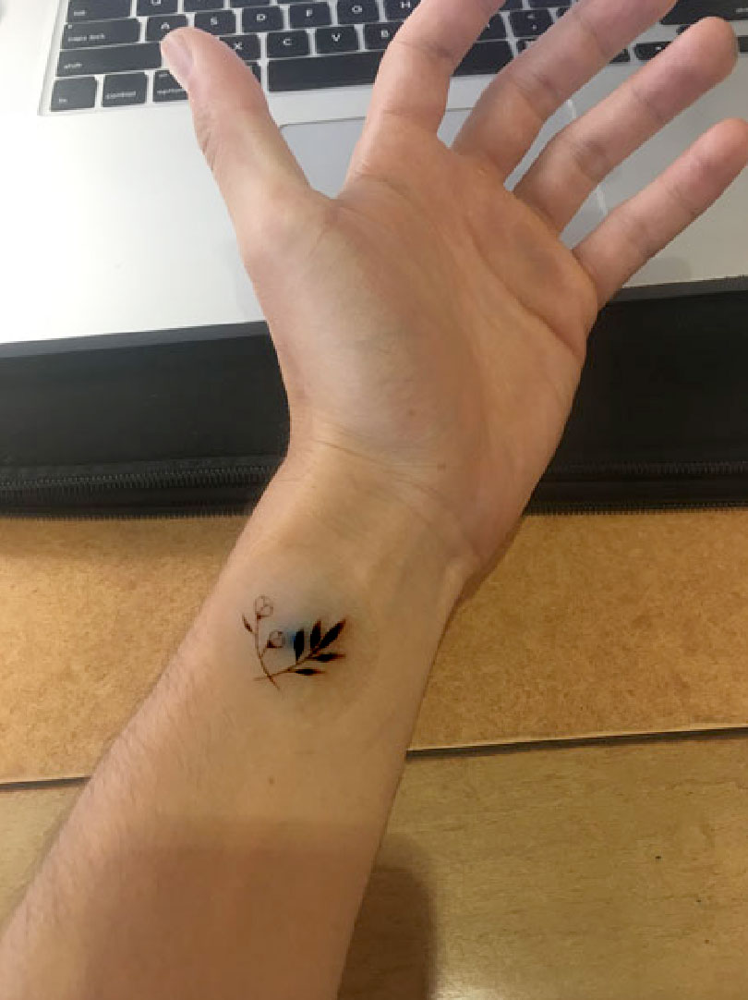
Blended
|
Comparison between Laplacian and Poisson Blending
Inputs:
Results
|
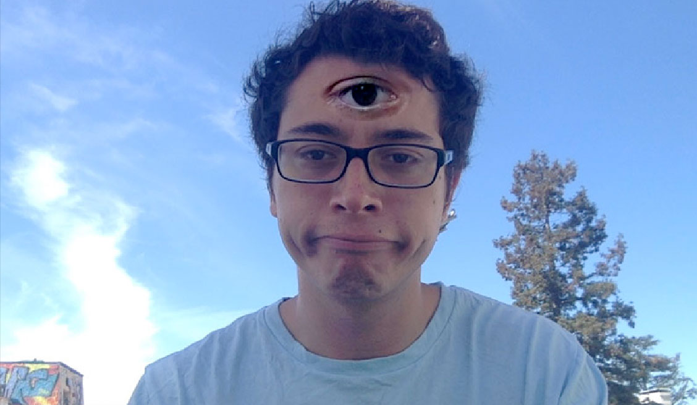
Poisson Blend
|
 Laplacian Blend
Laplacian Blend
|
The difference between these was subtle, based on the fact that it was transferring two images from very similar backgrounds. That being said, the advantage of using Poisson over Laplacian blending is pretty evident. Poisson blending allows for more seamless color matching of the source onto the target image. This is also unfortunately it's undoing as well, as transferring color between objects with vastly different colors causes radical color changes in the source image.
A nice result
Failure case
As highlighted earlier, it's large changes in background colors that can break the poisson algorithm. There is simply too much 'error' to distribute among the pixels and it can be clearly seen in the results.
Conclusion
I felt like I was fighting python over the entire course of the project, from the scipy functions, to sparse matrices, to lack of debugging functionality. I really milked it for optimization, but in the end my image sizes were limited to about 300 by 300 based on the least squares implementation. This project did get me thinking about pixels as an abstraction of visual information. To be honest, I still haven't seen any compelling generative art or compositing projects that rely purely on the pixel abstraction. I'm inclined to believe it's because the pixel, and images, in their naive form, have lost most of their expressive power by the time they reach the [255,255,255] representation.